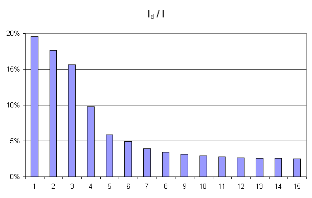

Analyse en composantes principales (ACP) et Auto Encoders#
Cet algorithme est proposé dans [Song1997]. Autrefois réseau diabolo, le terme auto-encoder est plus utilisé depuis l’avénement du deep learning. Il s’agit de compresser avec perte un ensemble de points. L”ACP est une forme de compression linéaire puisqu’on cherche à préserver l’information en projetant un nuage de points de façon à maximiser l’inertie du nuage. Les auto-encoders fonctionnent sur le même principe avec des modèles non linéaires.
subsection{Principe}
L’algorithme implémentant l’analyse en composantes principales est basé sur un réseau linéaire dit « diabolo », ce réseau possède une couche d’entrées à \(N\) entrées, une couche cachée et une couche de sortie à \(N\) sorties. L’objectif est d’apprendre la fonction identité sur l’espace \(\R^N\). Ce ne sont plus les sorties qui nous intéressent mais la couche cachée intermédiaire qui effectue une compression ou projection des vecteurs d’entrées puisque les entrées et les sorties du réseau auront pour but d’être identiques.
Figure F1 : Principe de la compression par un réseau diabolo
La figure suivante illustre un exemple de compression de vecteur de \(\R^3\) dans \(\R^2\).
Figure F2 : Réseau diabolo : réduction d’une dimension
Ce réseau possède 3 entrées et 3 sorties Minimiser l’erreur \(\sum_{k=1}^N E\left( X_{k},X_{k}\right)\) revient à compresser un vecteur de dimension 3 en un vecteur de dimension 2. Les coefficients de la première couche du réseau de neurones permettent de compresser les données. Les coefficients de la seconde couche permettent de les décompresser.
La compression et décompression ne sont pas inverses l’une de l’autre, à moins que l’erreur (1) soit nulle. La décompression s’effectue donc avec des pertes d’information. L’enjeu de l’ACP est de trouver un bon compromis entre le nombre de coefficients et la perte d’information tôlérée. Dans le cas de l’ACP, la compression est « linéaire », c’est une projection.
Problème de l’analyse en composantes principales#
L’analyse en composantes principales ou ACP est définie de la manière suivante :
Problème P1 : analyse en composantes principales (ACP)
Soit \(\pa{X_i}_{1 \infegal i \infegal N}\) avec \(\forall i \in \ensemble{1}{N}, \; X_i \in \R^p\). Soit \(W \in M_{p,d}\pa{\R}\), \(W = \vecteur{C_1}{C_d}\) où les vecteurs \(\pa{C_i}\) sont les colonnes de \(W\) et \(d < p\). On suppose également que les \(\pa{C_i}\) forment une base othonormée. Par conséquent :
\(\pa{W'X_i}_{1 \infegal i \infegal N}\) est l’ensemble des vecteurs \(\pa{X_i}\) projetés sur le sous-espace vectoriel engendré par les vecteurs \(\pa{C_i}\). Réaliser une analyse en composantes principales, c’est trouver le meilleur plan de projection pour les vecteurs \(\pa{X_i}\), celui qui maximise l’inertie de ce nuage de points, c’est donc trouver \(W^*\) tel que :
Le terme \(E\pa{W}\) est l’inertie du nuage de points \(\pa{X_i}\) projeté sur le sous-espace vectoriel défini par les vecteurs colonnes de la matrice \(W\).
Résolution d’une ACP avec un réseau de neurones diabolo#
Un théorème est nécessaire avant de construire le réseau de neurones menant à la résolution du problème de l”ACP afin de passer d’une optimisation sous contrainte à une optimisation sans contrainte.
Théorème T1 : résolution de l’ACP
Les notations utilisées sont celles du problème de l”ACP. Dans ce cas :
De plus \(S\) est l’espace vectoriel engendré par les \(d\) vecteurs propres de la matrice \(XX' = \sum_{i=1}^{N} X_i X_i'\) associées aux \(d\) valeurs propres de plus grand module.
Démonstration
Partie 1
L’objectif de cette partie est de chercher la valeur de :
Soit \(X=\vecteur{X_1}{X_N} \in \pa{\R^p}^N\), alors :
La matrice \(XX'\) est symétrique, elle est donc diagonalisable et il existe une matrice \(P \in M_p\pa{\R}:math:\) telle qu :
Soit \(P = \vecteur{P_1}{P_p}\) les vecteurs propres de la matrice \(XX'\) associés aux valeurs propres \(\vecteur{\lambda_1}{\lambda_p}\) telles que \(\abs{\lambda_1} \supegal ... \supegal \abs{\lambda_p}\). Pour mémoire, \(W = \vecteur{C_1}{C_d}\), et on a :
D’où :
Donc :
Partie 2
Soit \(Y \in \underset{ \begin{subarray}{c} W \in M_{p,d}\pa{\R} \\ W'W = I_d \end{subarray} } { \max }\; \trace{X'WW'X}\), \(Y = \vecteur{Y_1}{Y_d} = \pa{y_i^k}_{ \begin{subarray}{c} 1 \infegal i \infegal d \\ 1 \infegal k \infegal p \end{subarray} }\).
Chaque vecteur \(Y_i\) est écrit dans la base \(\vecteur{P_1}{P_p}\) définie en (3) :
Comme \(Y'Y = I_d\), les vecteurs \(\vecteur{Y_1}{Y_d}\) sont orthogonaux deux à deux et normés, ils vérifient donc :
De plus :
On en déduit que :
D’où :
Et :
Ceci permet d’affirmer que :
Les équations (4) et (5) démontrent la seconde partie du théorème.
Partie 3
D’où :
Partie 4
\(XX'\) est une matrice symétrique, elle est donc diagonalisable :
On en déduit que :
D’où :
Finalement, l’équation (7) permet de démontrer la première partie du théorème, à savoir (2) :
Calcul de valeurs propres et de vecteurs propres#
Le calcul des valeurs propres et des vecteurs propres d’une matrice fait intervenir un réseau diabolo composé d’une seule couche cachée et d’une couche de sortie avec des fonctions de transfert linéaires. On note sous forme de matrice \(\left( W\right)\) les coefficients de la seconde couche du réseau dont les biais sont nuls. On note \(d\) le nombre de neurones sur la couche cachée, et \(p\) le nombre d’entrées.
Soit \(X\in\R^{p}\) les entrées, \(Y=\left( y_{1,1},...,y_{1,d}\right) \in\R^{d}\), on obtient que : \(Y=W'X\).
Les poids de la seconde couche sont définis comme suit :
Par conséquent, le vecteur des sorties \(Z\in\R^{p}\) du réseau ainsi construit est \(Z=WW'X\). On veut minimiser l’erreur pour \(\left( X_{i}\right) _{1\leqslant i\leqslant N}\) :
Il suffit d’apprendre le réseau de neurones pour obtenir :
D’après ce qui précède, l’espace engendré par les vecteurs colonnes de \(W\) est l’espace engendré par les \(k\) premiers vecteurs propres de la matrice \(XX^{\prime}=\left( X_{1},...,X_{P}\right) \left( X_{1},...,X_{P}\right) ^{\prime}\) associés aux \(k\) premières valeurs propres classées par ordre décroissant de module.
On en déduit que \(W_{1}^{\ast}\) est le vecteur propre de la matrice \(M\) associée à la valeur propre de plus grand module. \(W_{2}^{\ast}\) est l’espace engendré par les deux premiers vecteurs. Grâce à une orthonormalisation de Schmidt. On en déduit à partir de \(W_{1}^{\ast}\) et \(W_{2}^{\ast}\), les deux premiers vecteurs propres. Par récurrence, on trouve l’ensemble des vecteurs propres de la matrice \(XX^{\prime}\).
Définition D1 : orthonormalisation de Schmidt
L’orthonormalisation de Shmidt :
Soit \(\left( e_{i}\right) _{1\leqslant i\leqslant N}\) une base de \(\R^{p}\)
On définit la famille \(\left( \varepsilon_{i}\right) _{1\leqslant i\leqslant p}\) par :
On vérifie que le dénominateur n’est jamais nul. \(e_{i}-\overset{i-1}{\underset{j=1}{\sum}}<e_{i},\varepsilon_{j}>\varepsilon_{j}\neq 0\) car \(\forall k\in\left\{ 1,...,N\right\} ,\; vect\left( e_{1},...,e_{k}\right) =vect\left( \varepsilon_{1} ,...,\varepsilon_{k}\right)\)
Propriété P1 : base orthonormée
La famille \(\left( \varepsilon_{i}\right) _{1\leqslant i\leqslant p}\) est une base orthonormée de \(\R^{p}\).
L’algorithme qui permet de déterminer les vecteurs propres de la matrice \(XX'\) définie par le théorème de l”ACP est le suivant :
Algorithme A1 : vecteurs propres
Les notations utilisées sont celles du théorème de l”ACP. On note \(V^*_d\) la matrice des \(d\) vecteurs propres de la matrice \(XX'\) associés aux \(d\) valeurs propres de plus grands module.
Analyse en Composantes Principales (ACP)#
L’analyse en composantes principales permet d’analyser une liste d’individus décrits par des variables. Comme exemple, il suffit de prendre les informations extraites du recensement de la population française qui permet de décrire chaque habitant par des variables telles que la catégorie socio-professionnelle, la salaire ou le niveau d’étude. Soit \(\left( X_{1},...,X_{N}\right)\) un ensemble de \(N\) individus décrits par \(p\) variables :
L’ACP consiste à projeter ce nuage de point sur un plan qui conserve le maximum d’information. Par conséquent, il s’agit de résoudre le problème :
Ce problème a été résolu dans les paragraphes Problème de l’analyse en composantes principales et Calcul de valeurs propres et de vecteurs propres, il suffit d’appliquer l’algorithme vecteurs propres.
Soit \(\left( X_{i}\right) _{1\leqslant i\leqslant N}\) avec \(\forall i\in\left\{ 1,...,N\right\} ,\,X_{i}\in\R^{p}\). Soit \(\pa{P_1,\dots,P_p}\) l’ensemble des vecteurs propres normés de la matrice \(XX'\) associés aux valeurs propres \(\pa{\lambda_1,\dots,\lambda_p}\) classées par ordre décroissant de modules. On définit \(\forall d \in \intervalle{1}{p}, \; W_d = \pa{P_1,\dots,P_d} \in M_{p,d}\). On définit alors l’inertie \(I_d\) du nuage de points projeté sur l’espace vectoriel défini par \(P_d\). On suppose que le nuage de points est centré, alors :
Comme \(\pa{P_1,\dots,P_p}\) est une base orthonormée de \(\R^p\), on en déduit que :
De manière empirique, on observe fréquemment que la courbe \(\pa{d,I_d}_{1 \infegal d \infegal p}\) montre un point d’inflexion (voir figure ci-dessous). Dans cet exemple, le point d’inflexion correspond à \(d=4\). En analyse des données, on considère empiriquement que seuls les quatres premières dimensions contiennent de l’information.
Figure F3 : Courbe d’inertie pour l’ACP
Courbe d’inertie : point d’inflexion pour \(d=4\), l’expérience montre que généralement, seules les projections sur un ou plusieurs des quatre premiers vecteurs propres reflètera l’information contenue par le nuage de points.